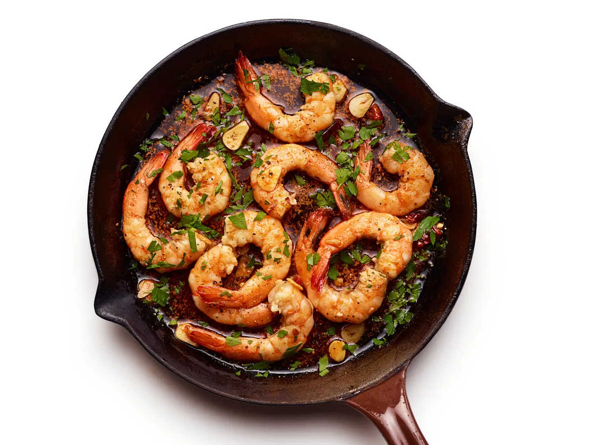

Gambas al Ajillo is a popular Spanish appetizer consisting of shrimps that are sautéed in a pan with minced garlic, lemon juice, paprika, and olive oil. The dish is usually consumed as a tapa. It is recommended to garnish gambas al ajillo with chopped parsley and pair it with some crusty bread on the side, which is useful for mopping up the flavorful sauce.
Meal prep time : 30 minutes
Servings : 2